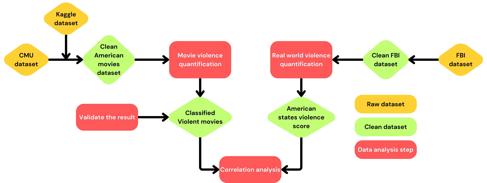

Once upon a time...
_journal page_
"This is true, the world is becoming more and more violence...", thought Gilbert when reading its daily morning journal.
Torture, massacre, shootings, all kinds of violence were increasing in the world.
After acknoledging these news, Gilbert couldn't sit still, he had to act to at least understand where the motivation for all these crimes lie.
"Hi, Hubert. Yes, it's Gilbert. Have you seen the news? It is frightening, all this violence?"
Hubert was a very smart cinema critic, he had seen all movies released since the 1901 (nearly), he knew everything about movies, so much he was sometimes disconnected from the real world:
"Uhm, no, I haven't Gilbert. But I am also scared. Movies are more and more violent, I don't even understand the excitement anymore."
An idea struck Gilbert's mind: could violence in real life and movie violence be correlated?
That's how the investigation started!
Violence, according to the UUDR,
refers to the intentional or unintentional use of force whether physical or psychological, threatened or actual, against an individual, oneself, or against a group of people, a community, or a government.
We all have a feeling about what violence is. Everyday violence seems to be on the rise worldwide, as a study on the perception of violence in one's own neighborhood states.
In parallel, a lot of movies depict violence. The impact of seen such fictional violence is a global concern,.
This study will focus on United state of America, relating violent events within each states to the release of violent movies in the area.
Hover !
"Crocodile tears" is a expression standing for a insincere display of emotion, such as a hypocrite crying fake tears of grief.
The phrase derives from an ancient belief that crocodiles shed tears while consuming their prey.
Actually, crocodile produce tears to hydrate there eyes, this is not linked to emotion and can be triggered by feeding !
Data cleaning, origin and exploration are developed in the dataset page. Similarly all the models and methods implemented are explained in the models and methods page. Here, we will focus on the workflow, visualization and findings.

To be able to correlate real life violence and movies violences, we first have to quantify violence on both side.
Our data journey will begin with the study of violence in movies starting from the CMU movie dataset.
Secondly, we will analysis the national incident-based reporting system of the FBI to construct a violence score for each states of america.
Finally, we will asses the correlation between the two metrics using an auto-regressive distributed lack model.
The central dataset for our study is the CMU Dataset. Since time will play a crucial role in our study and precise release dates are often unavailable, missing dates were filled using The Movies Dataset from Kaggle. More about the data cleaning steps in the dataset page.
For our purpose, we need to classify american movies in different level of violence, using only the plots. But how can we quantify violence ? What we consider violent or not is highly subjective.
After data cleaning, we conducted a pilot survey to manually classify a subset of movies between 3 categories :
150 movies have been labelled, across the 80 that have at least be labelled two times, 30% have been labelled differently. Especially, 3 movies have been assigned to opposite labels ! (two had the 3 labels and one had the opposite). We conclude that the notion of violence is complex and that a clear definition of each level of violence will be crucial for the following steps.
To classify the data, We used the large language model Chat-GPT-4o mini from OpenIA. We first classified the data between the 3 levels as for human labelled data, and secondly between 2 levels : violent and non-violent. We engineered a prompt with a clear classification task, the definition of each level of violence and examples.
Here are the scale given to the model...
### Violence scale : ###
- **Peaceful**: The text describes no physical or psychological violence. There are no aggression, conflict, or harm to people or animals. Suitable for all audiences.
- **Mild**: The level of violence is medium or uncertain. There might be moments of tension or mild conflict, such as arguments. Mild action or suspense is allowed.
- **Violent**: The text describe extreme physical or psychological violence, such as physical aggression, conflict, or harm. Scenes may include fighting, injury, rape. It a prominent feature of the film.
### Instructions ###
Assign a level of violence to each plot movie plot below. Respond with a dictionary where the keys are the plot numbers (e.g., 'plot1', 'plot2') and the values are the levels of violence ('Peaceful', 'Mild', 'Violent')
...And some examples.
Here are some examples for each label :
- **Peaceful**: plot1 :'norma and malcolm miochaels are a middle-aged married couple who are in the midst of a midlife crisis. both decide to separate and begin their lives anew away from each other. however, problems ensue once they discover that they are no longer as young as they used to be.'
plot2:'in the 1840s, two sisters fall in love with the same man. while drunk, the man writes a letter proposing marriage to the wrong one.'
- **Mild**: plot1:'set in the 19th century, the plot centered around a man who is falsely accused murder. the other side of the door was shot in monterrey, mexico.{{cite web}}'
plot2:'in a desperate, but not-too-courageous, attempt to end his life, a man hires a murderer to do the job for him. soon, though, things are looking better and the he must now avoid the hit.'
- **Violent**: plot1:'Richard Beck is a police detective who believed that rape victims are to blame for the crime. He is later raped by two of the suspects he had been chasing. Ultimately, he changes his beliefs about rape victims. This made for TV movie was groundbreaking in that it portrayed the rape of a man by two other men, and because of this it has become a cult classic.'
plot2:'newlywed carl goes to war where he endures major suffering. back home, wife pauli starves, becomes a prostitute to survive, and their baby dies.'
Now that the films are classified, we want to take a closer look at them before feeding them into our research model of the correlation between real and cinematic violence.
As a first step, we perform a 2-dimensional PCA regression on the entire dataset and represent the two main components. We see clusters! In fact, films dominated by emotions such that: kill, negative_emotion, death and crime are most correlated on the upper part of the plot. The lower part, on the other hand, is dominated by films of categories such that: children, party, home, wedding, family.
Clearly, the two types of films seem to be quite distinct: on the one hand, films that we can classify as violent and, on the other hand, peaceful films.
Armed with this information, we move on to the analysis of the films as categorised by Chat-GPT-4o mini, hoping to validate their classification.
For this, we extract the ten most represented categories in both categories. We clearly see a difference: violent films are categorised by kill, death, fight, war, etc.; whereas non-violent films deal with topics such as: travelling, communication, friends, wedding, etc.
For a more visual representation, we choose 10 films at random, for which we represent the percentage for each of the 10 most present categories.